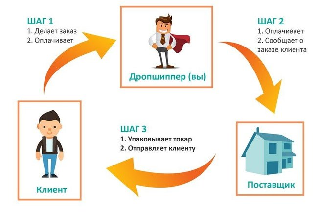
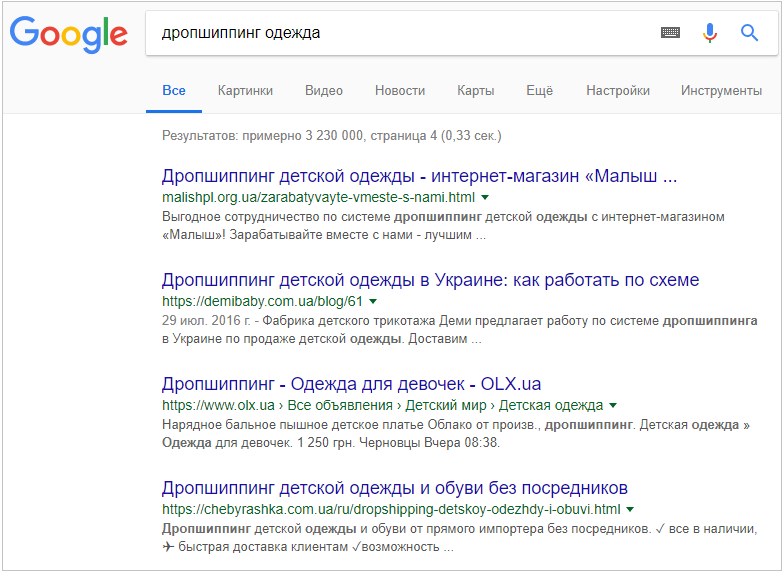

Лучшый прямой поставщик спортивной обуви в Украине
- ✔️Принимаем Ваши заказы ежедневно
- ✔️Вся обувь в фирменных коробках
- ✔️Сроки доставки 1-2 дня Украина
- ✔️Нова Почта
- ✔️Обмен/Возврат в течении 14 дней
- ✔️Оплата Вашего дохода после каждой продажи
- ✔️Выплаты без выходных
- ✔️Есть бонусная система
- ✔️Регулярные поставки новинок
- ✔️Заказы отправляем наложенным платежом (под Вашу полную ответственность)
- ✔️Наш Телеграмм Канал
Дропшиппинг
Дропшиппинг-это прямая доставка нашей продукции вашим покупателям и уникальная возможность начать свой бизнес без особых вложений. Это продажа чужих товаров, и этим она отличается от обычной торговли. Дропшиперу не нужно покупать товар, арендовать склад и контролировать доставку. Его задача – продвигать товары и искать клиентов. Всем остальным занимается поставщик.
Схема дропшиппинга

- Продавец выбирает товары из каталога поставщика и загружает на торговую площадку – это может быть собственный интернет-магазин, лендинг, маркетплейс или группа в соцсетях.
- Добавляет в цену поставщика свою наценку, размер которой определяет его заработок.
- Продвигает товары и находит клиента.
- Когда клиент делает заказ, продавец передает информацию об этом поставщику.
- Поставщик упаковывает товар и посылает его клиенту.
- Когда клиент оплачивает товар в почтовом отделении, то поставщик сбрасывает маржу продавцу.
- Если клиент не заберает посылку то дропшипер должен оплатить за обратную доставку (приблизительно 120 грн)
Как начать дропшиппить
Чтобы стать дропшипером, нужно определиться с типом товара, найти поставщиков и создать свой интернет-магазин или страницу в соцсетях.
Выбор ниши
Следует выбирать востребованный товар низкой и средней ценовой категории.Остановиться стоит на той категории товаров, которая близка вам самим. Это облегчит ведение бизнеса и не превратит интересное дело в скучную рутину.
Популярные ниши
- Товары для дома.
- Детские товары.
- Одежда, обувь.
- Детские товары.
- Косметика, духи.
- Сумки, часы.
- Электроные аксессуары
- Техника и гаджеты.
Где найти поставщика
Желательно работать с несколькими поставщиками, даже конкурирующими в одной нише. Так вы максимально обезопасите себя от внезапно закончившегося товара на складе и не подведете своих клиентов. Внимательно изучите условия работы: действия дропшиппера в случае отказа клиента от товара, как происходит замена бракованной продукции и прочее.
Чтобы найти поставщика, воспользуйтесь поиском. К примеру, введите в поисковую строку «дропшипинг поставщики Украина». А если ищете поставщика конкретных товаров, можно сузить поиск «дропшипинг обуви» или «дропшипинг косметика».
Также можете искать поставщика в телеграмм каналах
Рекомендуем обратить внимание на такие:
Запустить рекламу
Используйте для продвижения партнерские программы,таргетированную рекламу. Выбирайте, исходя из бюджета, но совсем без этого не обойтись. Для интернет-магазина и рекламной кампании потребуются качественные фотографии товара, желательно с разных ракурсов. Еще лучше, видеоролик с демонстрацией продукта.
Итог
Дропшипинг традиционной онлайн-торговли, но несет свои риски и трудности. Чтобы их уменьшить, выберите надежных поставщиков, сделайте удобную торговую площадку и разберитесь в тонкостях продвижения.